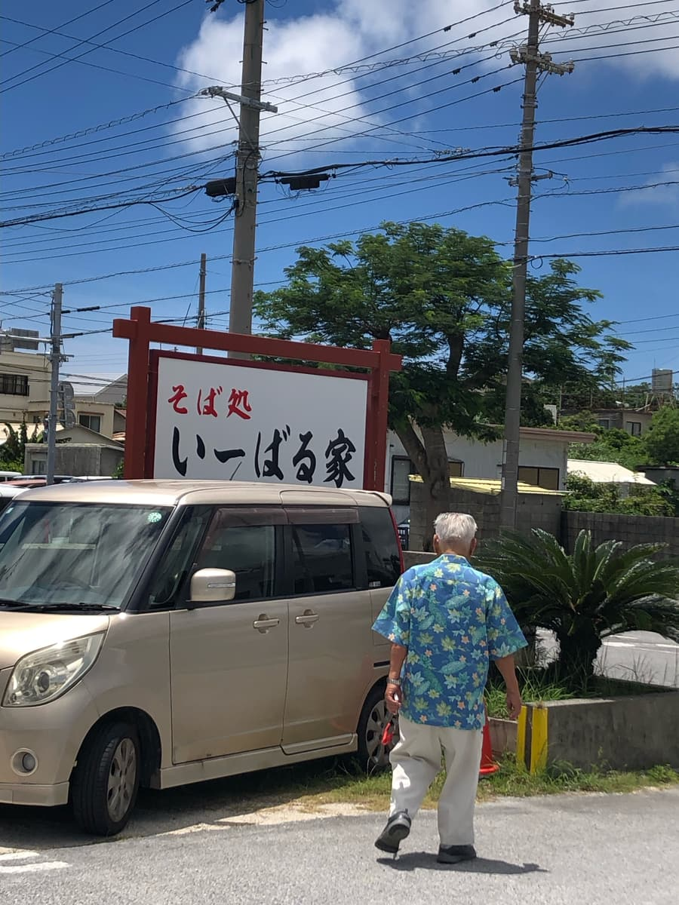
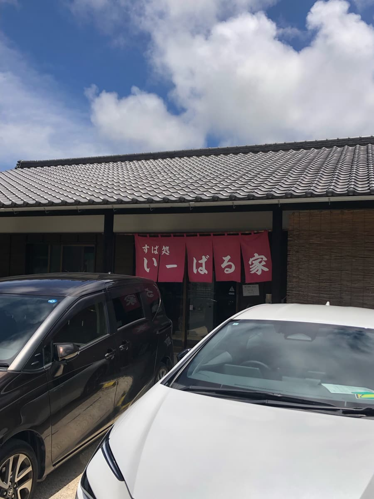
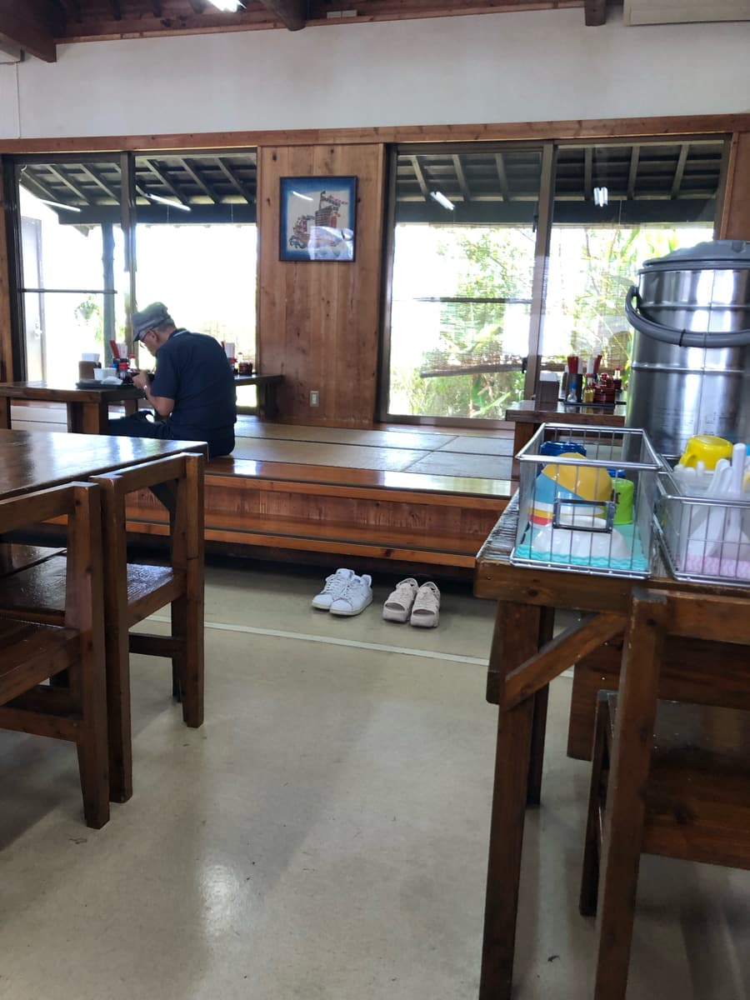
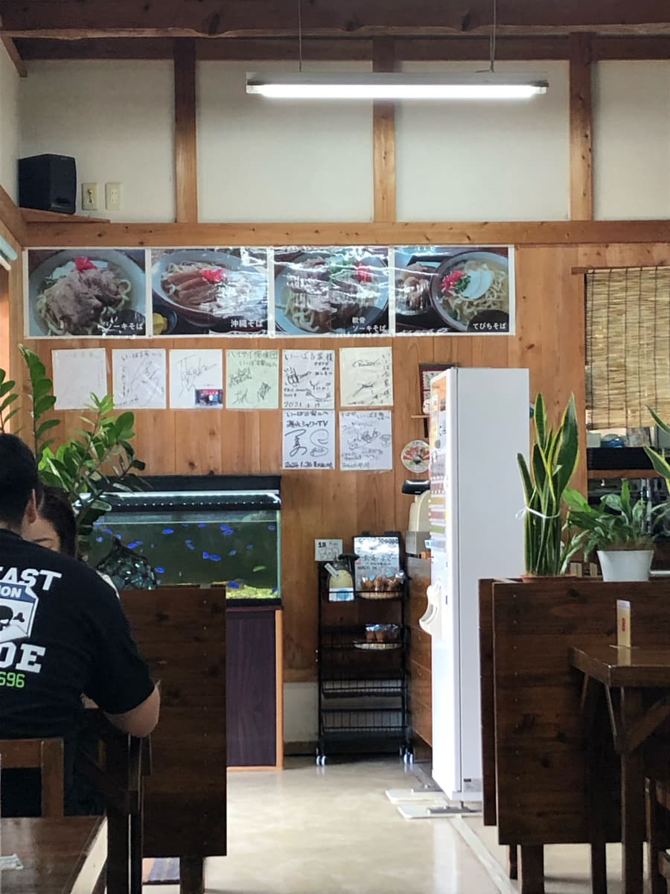
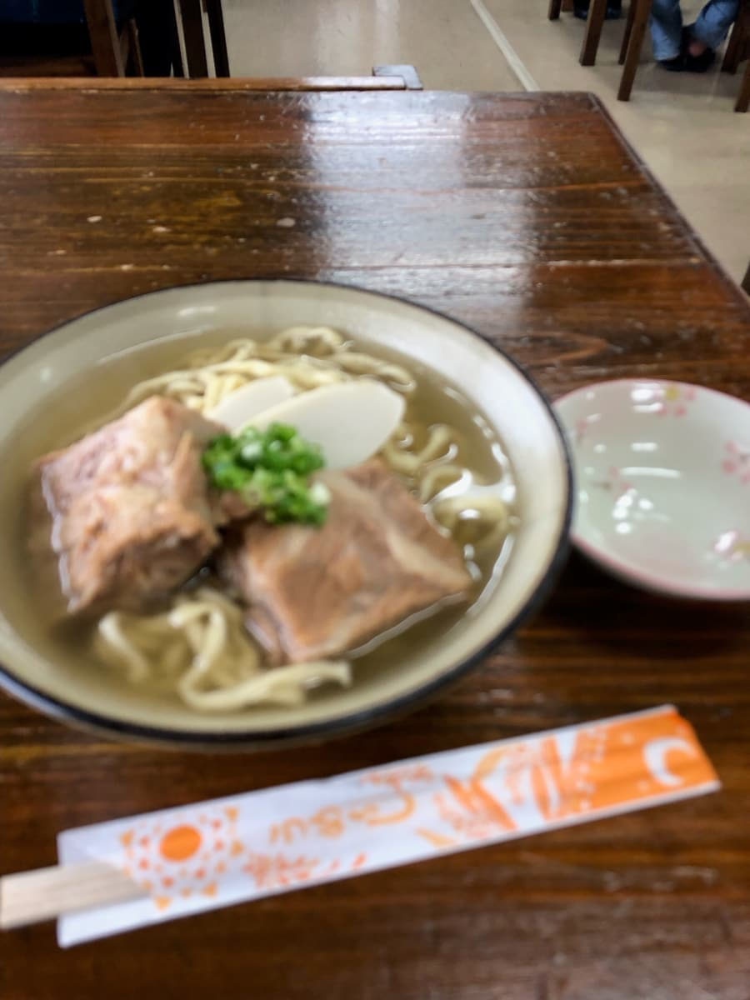
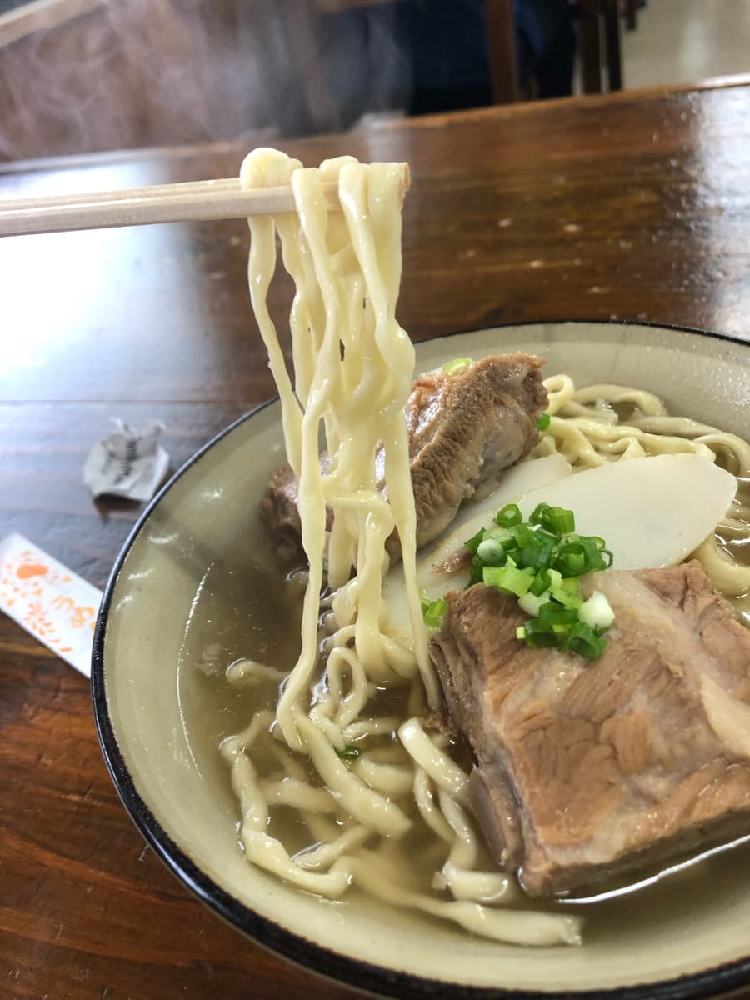

※こちらの記事はClaude 3.5 SonnetのAIで作成したものに一部加筆しました。
2024.6に食べました😄




入口に設置された食券機から「ソーキそば」を注文することに。

さて、まずはスープから。一口すすってみると、豚骨出汁が少し効いているのが分かります。ただし、その主張は控えめで、あっさりとした印象。
沖縄そばのスープは店によって個性が強く出るものですが、「いーばる家」さんのスープは、どちらかというとオーソドックスな部類に入りますね。
特別際立った特徴はなく、沖縄そばのスープとしては平均的な仕上がりで、特筆すべき点は見当たりませんでした。普通に美味しいという感じですね。

次は麺です。「いーばる家」さんの麺は、細めのやや縮れたストレートタイプ。茹で加減は柔らかめです。
麺の太さは若干細めですが、スープとの絡みは悪くありません。ただし、個人的な好みを言えば、もう少しコシがあっても良かったかなと感じました。
最後に具材、特にソーキについて触れていきます。ソーキは沖縄そばの代表的な具材の一つですが、味付けはあっさり系です。
また、肉質がやや粗く、パサつき気味だったのが残念ですね。
また、ソーキのボリューム感にも不満が残りました。骨はかなり大きいのに対し、肉の量が少なめ。
その他の具材（ネギやかまぼこなど）は普通で、特筆すべき点はありませんでした。
総評として、「いーばる家」さんのソーキそばは、全体的に「普通」という印象でした。特別悪いわけではありませんが、かといって強く印象に残るような特徴もありません。確かに、訪れた時は地元のお客さんで賑わっていました。常連さんも多く、地域に根付いた人気店であることは間違いないでしょう。しかし、もう一度わざわざ足を運びたいと思えるほどの魅力は感じられませんでした。
評価（9点/15点）：普通な感じですね😊 糸満市を訪れた際に手軽に沖縄そばを楽しみたい方は如何でしょうか？
麺 ：★★★☆☆（3）
スープ：★★★☆☆（3）
具 ：★★★☆☆（3）